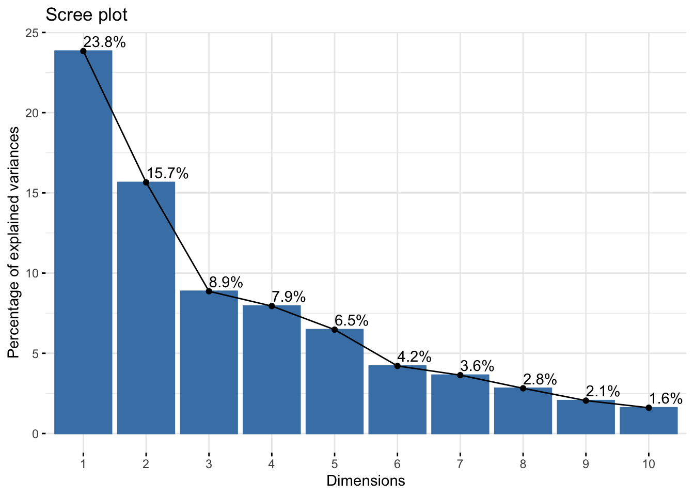
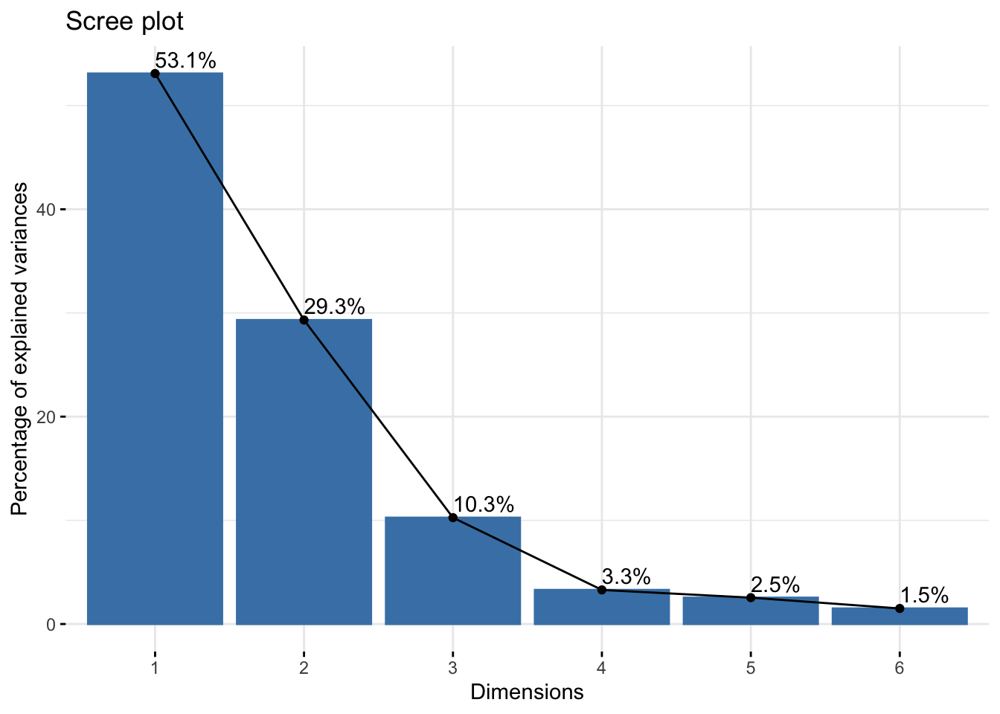
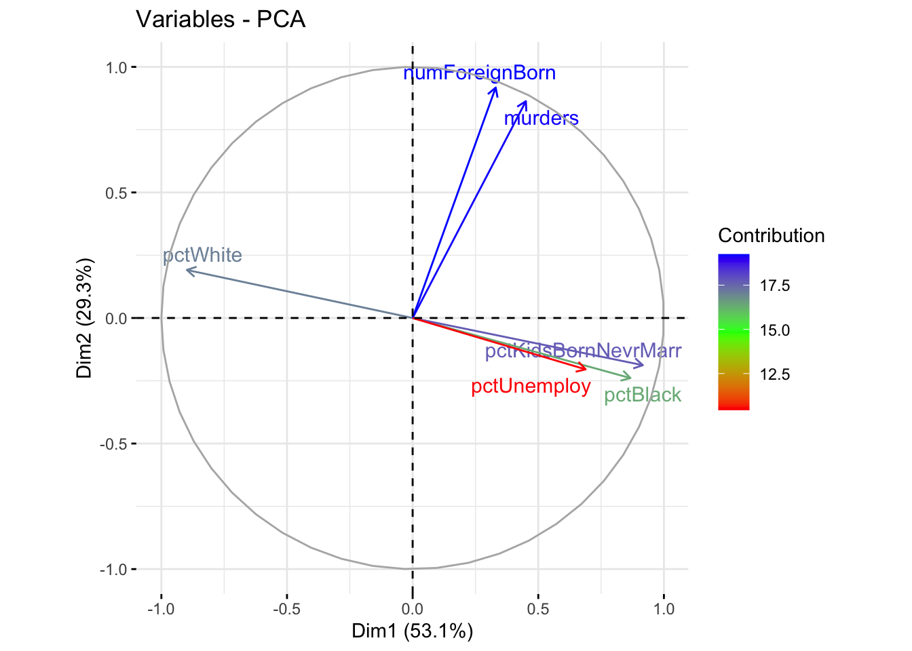
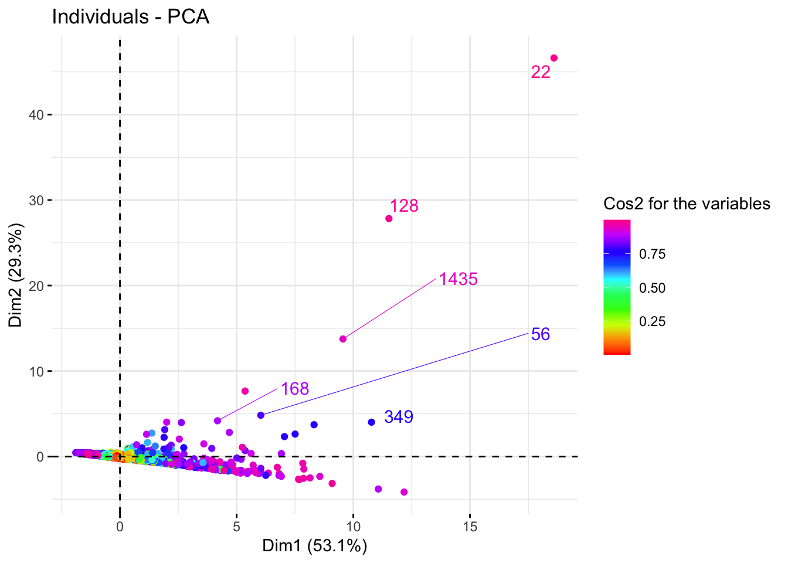
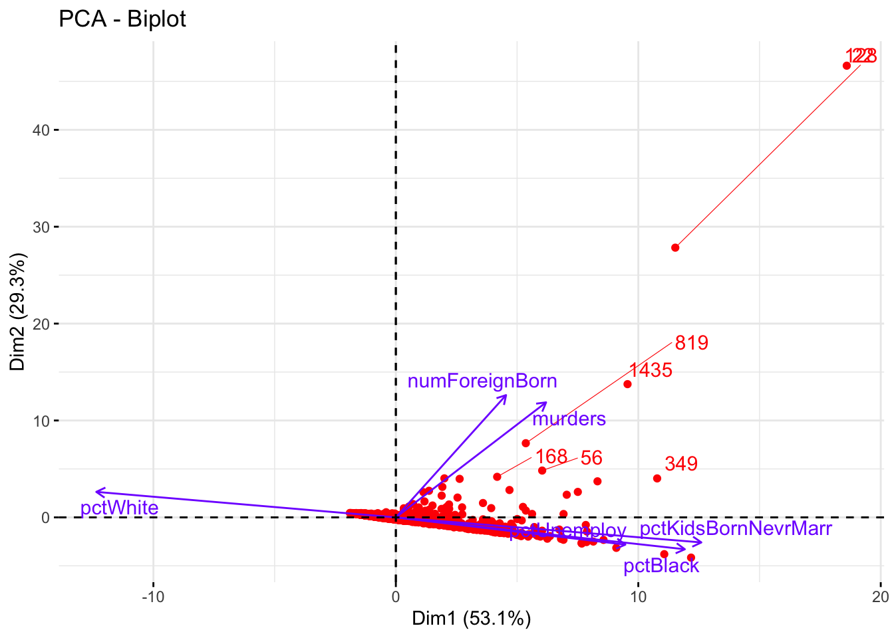

2 Principal Component Analysis
Nous allons effectuer une Analyse en Composantes Principales(ACP) pour la variables numériques de notre jeu de données Communities
Application de la fonction PCA
L’objectif est de réduire la dimension de notre jeu de données PCA_df tout en conservant un pourcentage élevé des informations.
Communities_PCA <- FactoMineR::PCA(PCA_df,scale.unit=TRUE,
graph = FALSE)Pourcentage d’explication
factoextra::fviz_eig(Communities_PCA,addlabels = TRUE)
Nous constatons que deux dimensions sont insuffisantes pour représenter 75% des informations. Pour y remédier nous allons diminuer le nombre de variables de PCA_df(6 par exemple).
library(dplyr)
PCA_df = PCA_df %>% select(murders,pctWhite,pctBlack,
pctKidsBornNevrMarr,
numForeignBorn,pctUnemploy)
Communities_PCA <- FactoMineR::PCA(PCA_df,scale.unit=TRUE,
graph = F)
factoextra::fviz_eig(Communities_PCA,addlabels = TRUE)
Ce graphe nous permet de remarquer que deux composantes principales sont suiffisantes pour représenter \(82.4\%\) de l’information ce qui est supérieur à \(75\%\) notre pourcentage seuil.
Graphiques de corrélation des variables
factoextra::fviz_pca_var(Communities_PCA,
col.var = "contrib",
gradient.cols = rainbow(3),
repel = TRUE,
legend.title='Contribution')
À partire du graphe précédent, nous pouvons constater une forte corrélation entre le pourcentage de personnes sans emplois pctUnemploy, d’enfants nés hors mariage pctKidsBornNevrMarr et de personnes de la communauté noire américaine pctBlack. Ces dernières sont peu corrélées avec murders.
Graphes des individus
factoextra::fviz_pca_ind(Communities_PCA,
col.ind ='cos2',
gradient.cols = rainbow(10),
repel = TRUE,
legend.title = "Cos2 for the variables",
)
Une variable avec un score élevé suivant un axe signifie qu’elle a fortement contribué à la création de cet axe. Une variable moyenne c’est celle qui est proche de l’origine.
Biplot individus et variables
factoextra::fviz_pca_biplot(Communities_PCA, repel = TRUE,
col.var = rainbow(4)[4],
col.ind = rainbow(1)
)
Prenons la la variable numéro 819 (C’est à dire la ligne 819 de PCA_df). Nous savons que les variables {murders} et {numForeignBorn} sont fortement corrélées. Alors si le nombre de meutres {murders} est très faible par rapport à la moyenne, alors le nombre de personnes nées à l’étranger{numForeignBorn} l’est aussi.
Un raisonnement similaire peut être fait pour les variable fortement et négativement corrélées comme le pourcentage de personnes sans emplois pctUnemploy et de personnes de la communauté blanche américaine pctWhite sauf que dans ce cas, les variables varieront dans de sens opposés.
Nous pouvons vérifier ces informations tirées sur le graphes précédent dans notre data set grâce à la cellule de code suivante.
library(dplyr)
variable819 <- rbind(PCA_df[819,],apply(PCA_df,2,mean),
apply(PCA_df,2,min),
apply(PCA_df,2,max)
) %>% dplyr::select(murders,numForeignBorn) %>%
`rownames<-`(.,c('Variable819','mean','min','max'))
variable819## murders numForeignBorn
## Variable819 446.000000 290374.000
## mean 7.764786 6277.274
## min 0.000000 20.000
## max 1946.000000 2082931.000